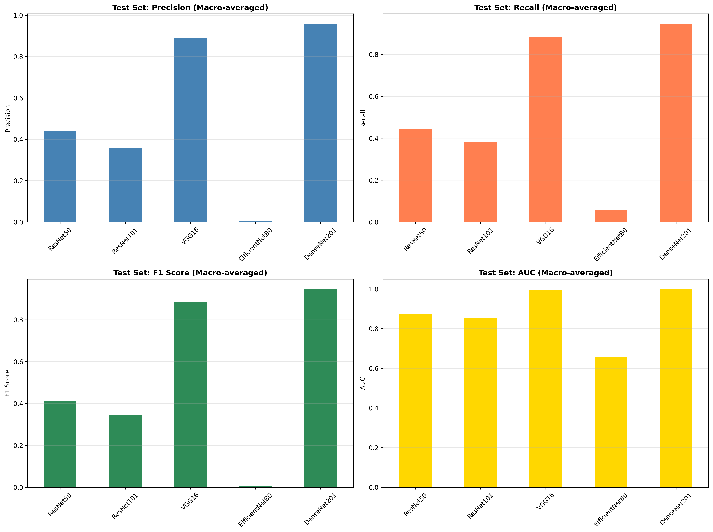
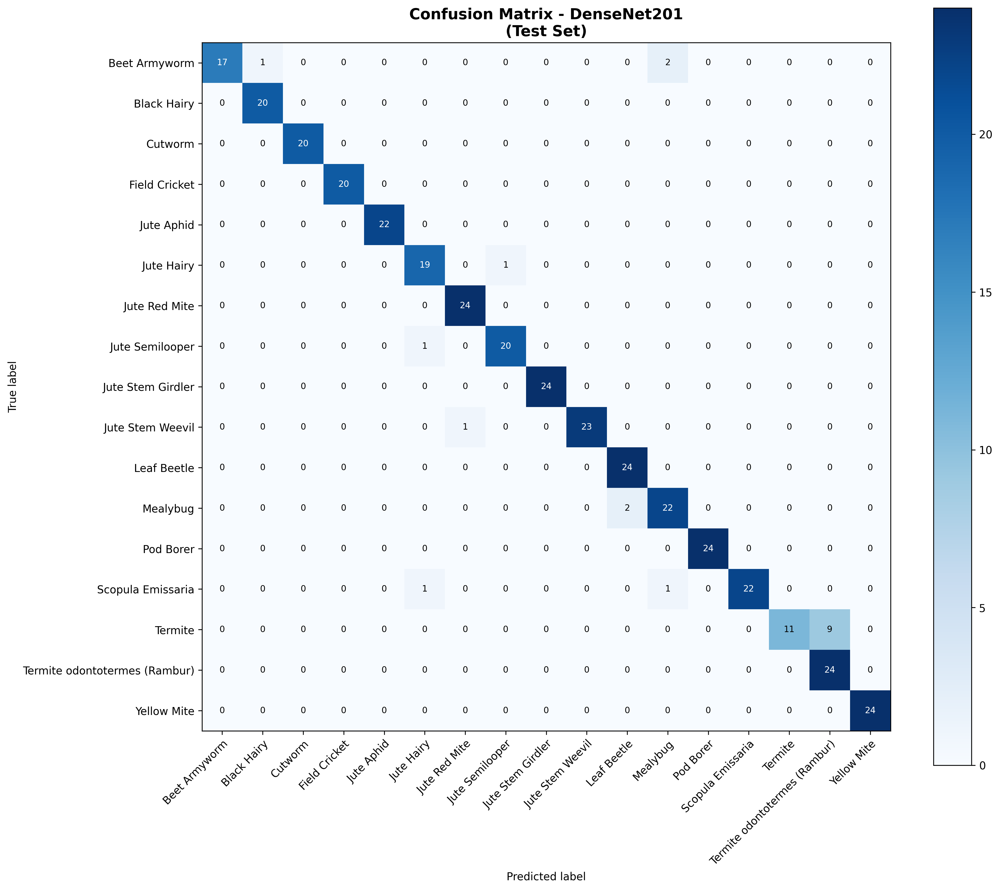
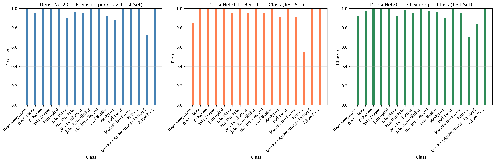
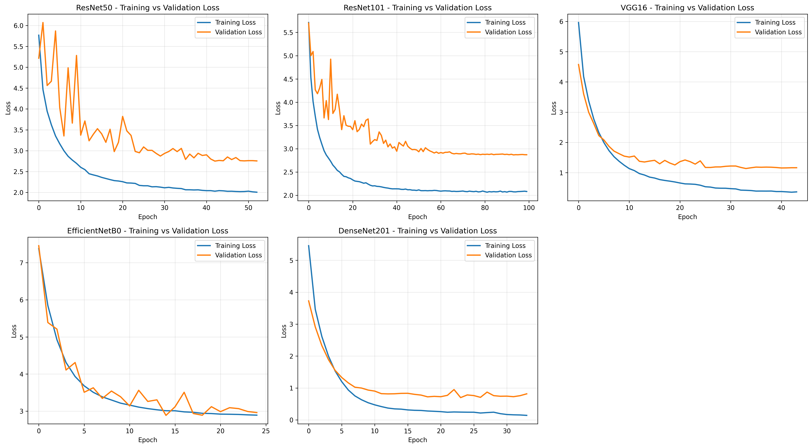

From spatial databases to a physics engine to a controller tested against formal safety requirements.
Designed and implemented an adaptive cruise controller for a simulated ego vehicle in the CARLA driving simulator, built for USC's Autonomous Cyber-Physical Systems course. The controller takes in the host vehicle's velocity, desired cruise speed, and distance to the lead vehicle, and outputs an acceleration command and operating mode (cruising or following) every simulation step.
Rather than a single control law, I split the problem into distance zones: a hard failsafe that commands full braking if the lead vehicle enters a minimum safe distance, a proportional braking zone that scales braking severity as the gap closes, a limited-acceleration zone to avoid closing the gap too aggressively at medium range, and normal cruise control once the road ahead is clear. I evaluated the controller against Signal Temporal Logic (STL) safety and performance requirements using the RT-AMT offline monitoring package, across multiple simulated driving scenarios with different lead-vehicle behavior.
A multi class computer vision classifier identifying 17 species of agricultural jute pests via transfer learning. I benchmarked five pretrained convolutional backbones (ResNet50, ResNet101, VGG16, EfficientNetB0, and DenseNet201), freezing the base and training a custom classification head with batch normalization and dropout on top of each. The preprocessing pipeline handled dynamic image scaling and zero-padding with OpenCV, paired with Keras data augmentation for the training set.
The benchmarking itself was the more interesting part: backbone choice mattered enormously. DenseNet201 reached a 0.947 macro-averaged F1 score and 0.9998 macro AUC on the held-out test set, while EfficientNetB0 collapsed to near-zero precision and recall under the exact same training setup, a reminder that transfer learning results depend heavily on how well a pretrained backbone's learned features actually transfer to the target domain, not just on model size or reputation.
| Model | Precision (Macro) | Recall (Macro) | F1 (Macro) | AUC (Macro) |
|---|---|---|---|---|
| ResNet50 | 0.442 | 0.442 | 0.410 | 0.873 |
| ResNet101 | 0.357 | 0.383 | 0.347 | 0.851 |
| VGG16 | 0.889 | 0.885 | 0.882 | 0.994 |
| EfficientNetB0 | 0.004 | 0.059 | 0.007 | 0.659 |
| DenseNet201 | 0.959 | 0.947 | 0.947 | 0.9998 |




A full stack platform that converts course syllabi into structured study plans, with AI powered features that extract key information and auto generate flashcards and quizzes. Built and presented with a team.
Installed and configured PostgreSQL with the PostGIS extension, writing spatial SQL queries for convex hull and nearest neighbor analysis, validated across ArcGIS Online, Google Earth, and OpenLayers.
A weather application integrating Google Maps, IPInfo, and Tomorrow.io REST APIs to provide geolocation and real time weather data, with automated CI/CD for deployment.
An iOS weather client built with SwiftUI, backed by a Node.js and MongoDB API hosted on Azure, fetching and displaying real-time weather data.
A C++ physics engine with AABB based collision detection and custom data structures for mass and gravity calculations. Frustum culling took the render loop from 30 to 60 FPS.
A Python tool for automated, scripted downloading of images from web sources, built to handle multimedia content efficiently at scale.